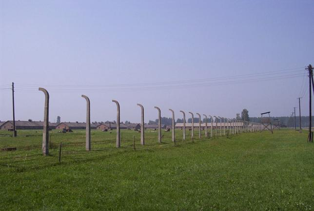
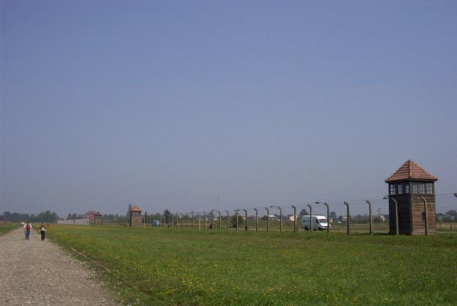
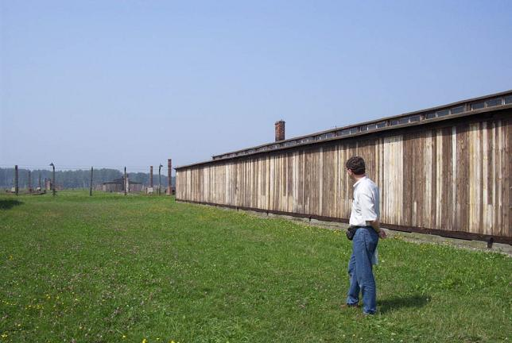

Birkenau: The Camp, Part 1
The camp, which was surrounded by barbed wire and patrolled by armed guards, was divided into two sections, with the train tracks running in the middle. The bottom picture shows the outside of the barracks, which were built of wood. They had no windows but, rather, openings at rooftop level, allowing fresh air to come in. Unfortunately, they also allowed the winter cold to come in.




Continue to The Camp, Part 2 Back to Birkenau Back to the trip homepage